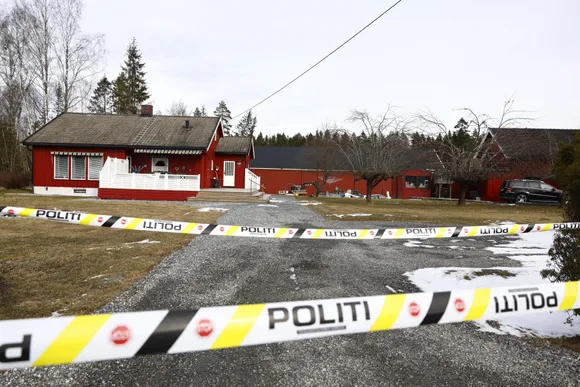

Solveig Bratlie (geotekniker), Kjartan Berland (ordfører Lillestrøm) og Simon Oldani (operativ leder NVE) i prat mandag ettermiddag. Foto: Arash A. Nejad
Mandag formiddag er det fremdeles uvisst hva som forårsaket utglidningen som førte til at ti personer måtte evakueres fra sine hjem i Lillestrøm søndag kveld. – Det har ikke vært noe bygge- eller anleggsarbeid i området som vi er kjent med, sier kommunalsjef Morten Nårstad i Lillestrøm kommune til TU. Utglidningen skal være 230 meter lang og ha skjedd i løpet av det siste døgnet før evakueringen. – Det har skjedd i et skogsområde, og massene har sklidd ned på et jorde og under en høyspentledning, sier operasjonsleder Atle Vesttorp i Øst politidistrikt til Romerikes Blad.
Kan være kvikkleire
Området som har glidd ut er innenfor NVE sitt aktsomhetsområde for kvikkleire, skriver avisen.
– Vi kan derfor ikke se bort fra at det er kvikkleire i området. Det må vi undersøke nærmere, sier ordfører Kjartan Berland (H) i Lillestrøm kommune til RB
10. november 2016 gikk det et stort kvikkleireskred litt over to kilometer unna søndagens utglidning. Tre arbeidere fra Litauen som drev med hogst i området omkom i skredet.
Nårstad sier det er for tidlig å avgjøre om det er snakk om kvikkleire i utglidningen.
– Vi har ikke gjort noen fysiske grunnundersøkelser ennå. Planen er å gjennomføre droneundersøkelser i dag for å få et bedre bilde av skredet. Deretter vil vi bruke data og dronebilder for å gjøre vurderinger sammen med NVE, før vi avgjør hvordan type grunnundersøkelser vi skal gjennomføre, forklarer han til TU.
Jobber med kartlegging av området
Mandag ettermiddag er droneundersøkelsene i regi NVE i gang. Berland er på stedet, og forteller TU at det fremdeles er usikkert når det vil være mulig å sende noen inn i området.
– Ingen skal inn i området før en har fått kartlagt det godt og gjort vurderinger over hvor det kan være trygt og ferdes og hvor det ikke er trygt, sier han.
Fire hus er evakuert. Ingen av disse skal være farlig nær utglidningen.
– I Lillestrøm har vi opplevd skred og utglidninger flere ganger tidligere. Derfor velger vi å se alvorlig på dette, og trapper det opp med én gang. Vi kan heller ta det ned hvis det viser seg ikke å være så farlig, sier kommunikasjonssjef i Lillestrøm kommune, Heidi Lippestad til RB.
TU har vært i kontakt med NVE, de ønsker ikke å kommentere saken og viser til Lillestrøm kommune.